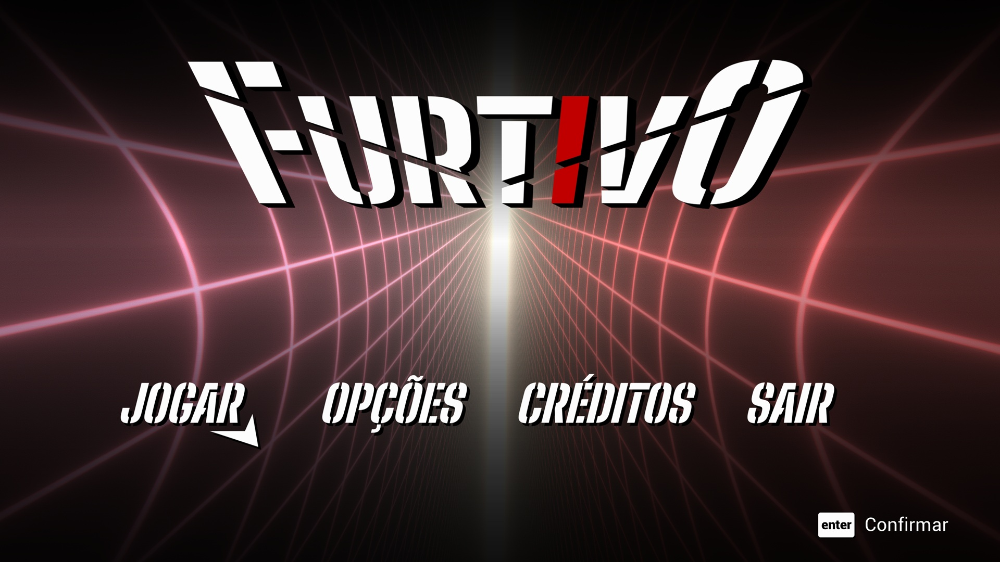

Formado como Tecnólogo em Jogos Digitais pela Fatec São Caetano do Sul.
Atualmente cursando minha segunda graduação como Tecnólogo em Desenvolvimento de Softwares Multiplataforma,
para aprimorar meus conhecimentos e expandir meus horizontes.
TCC Fatec São Caetano do Sul

Trabalho de Conclusão de Curso (TCC) do Curso Superior de Tecnologia em Jogos Digitais da Fatec São Caetano do Sul
FurtivoPortifólio Desenvolvimento Web 1
Pequeno projeto que compila todas as atividades feitas em sala de aula durante a matéria de Desenvolvedor Web 1,
no primeiro semestre do Curso Superior de Desenvolvimento de Software Multiplataforma da Fatec Zona Leste.
O peojeto tem como intuito apresentar os conceitos iniciais sobre o desenvolvimento de páginas web e servir como portifólio acadêmico e profissional.